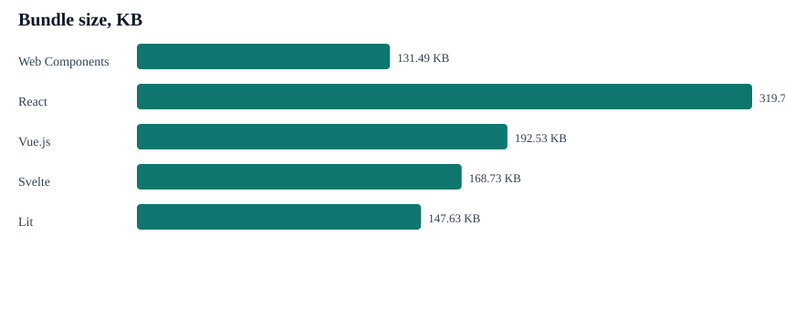
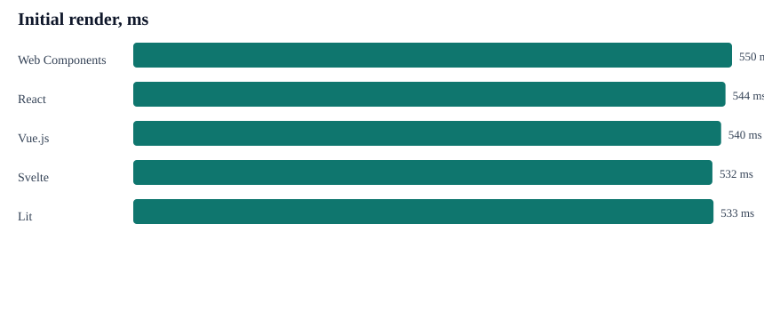
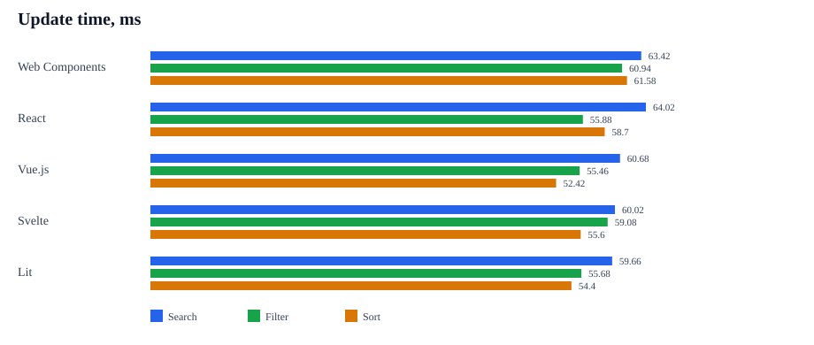
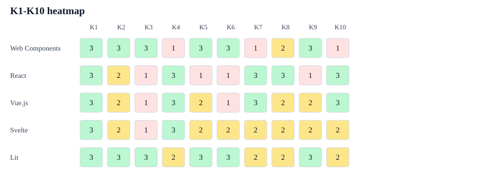

Каталог элементов
Карточки, поиск, фильтрация по категории, сортировка и сброс состояния.
Практический результат сравнительного анализа
Экспериментальный стенд и практические рекомендации по выбору между Web Components, фронтенд-фреймворками и гибридным подходом.
Связь разделов
Экспериментальный стенд подтверждает критерии K1-K10 и шкалу 0-3, а раздел рекомендаций использует результаты анализа для практического выбора технологии под профиль проекта.
Блок 1. Экспериментальный стенд
Стенд показывает цепочку доказательств: пять реализаций компонента, единый датасет, одинаковые сценарии, raw JSON, processed CSV/JSON, диаграммы и обоснование баллов.
Карточки, поиск, фильтрация по категории, сортировка и сброс состояния.
Web Components, React, Vue.js, Svelte и Lit используют один файл `data/dataset-500.json`.
Первичный рендеринг, время обновления, CSS-конфликты, переносимость и tooling evidence.
Демонстрация компонента
Демо использует 500 элементов из общего датасета. Сравниваемые реализации с тем же поведением находятся в `apps/`.
Среда запуска
Проверяется статус обработанных данных.
Технические метрики
Таблица строится из обработанных данных после запуска единого сценария эксперимента.
Диаграммы
SVG-файлы генерируются скриптом `npm run generate-charts`, а не рисуются вручную.




Как читать матрицу
Каждый критерий K1-K10 оценивается по шкале 0-3: 0 - свойство отсутствует, 1 - выражено слабо, 2 - поддерживается частично, 3 - поддерживается полноценно. Баллы не суммируются: матрица нужна для сопоставления сильных и слабых сторон технологии под профиль проекта. Для K6 шкала инвертирована: чем меньше зависимость от runtime и экосистемы, тем выше балл.
Ограничения эксперимента
Числовые значения зависят от операционной системы, версии Node.js, браузера, мощности компьютера и текущей нагрузки. Поэтому результаты используются как сравнительные значения внутри одного запуска стенда, а не как абсолютные универсальные показатели для всех проектов и окружений.
Как воспроизвести эксперимент
После запуска обновляются `results/raw`, `results/processed`, `results/charts`, а также данные сайта в `docs` для публикации через GitHub Pages.
npm install
npm run install:apps
npm run experiment
Матрица K1-K10
Оценки не суммируются в общий рейтинг: матрица показывает профиль технологии по критериям ВКР.
Обоснование баллов
На странице показана компактная версия по технологиям. Полный markdown доступен как артефакт эксперимента.
Блок 2. Практические рекомендации
Web Components сильнее проявляют себя там, где важны переносимость, независимость от фреймворка и долгий жизненный цикл компонентов. Фронтенд-фреймворки рациональнее использовать там, где требуется развитая инфраструктура приложения, управление состоянием, маршрутизация и высокая скорость командной разработки.
Быстрый выбор
Рекомендации
В экспериментальном стенде реализованы пять технологий: Web Components, React, Vue.js, Svelte и Lit. Angular и гибридный подход используются в разделе практических рекомендаций как проектные варианты, но не входят в экспериментальную матрицу измерений.
Выбирайте Web Components, если компоненты должны работать в разных технологических стеках, быть независимыми от конкретного фреймворка и сохранять стабильность при долгом жизненном цикле проекта.
React рационален для приложений, где важны гибкость архитектуры, развитая экосистема и возможность самостоятельно подобрать маршрутизацию, управление состоянием и UI-библиотеки.
Vue.js подходит там, где требуется низкий порог входа, реактивная модель и возможность постепенно внедрять фреймворк в уже существующие интерфейсы.
Angular целесообразен в крупных проектах, где важны строгая архитектура, TypeScript, встроенные инструменты, Dependency Injection и единообразие командной разработки.
Svelte стоит рассматривать, когда важны малый размер клиентской сборки, компиляционный подход и высокая отзывчивость интерфейса.
Lit занимает промежуточную позицию: компоненты остаются стандартными Web Components, но разработчик получает реактивные свойства, шаблонизацию и удобную модель разработки.
Используйте Web Components как устойчивый слой независимых UI-компонентов, а фреймворки - для бизнес-логики, маршрутизации, управления состоянием и архитектуры приложения.
Матрица выбора
| Условие проекта | Лучше подходит | Почему |
|---|---|---|
| Компоненты должны использоваться в разных стеках | Web Components / Lit | Стандартный DOM-контракт, независимость от runtime фреймворка. |
| Нужна дизайн-система для нескольких приложений | Web Components / Lit | Изоляция стилей, переносимость, стабильный публичный API. |
| Разрабатывается крупное корпоративное SPA | Angular / React / Vue.js | Есть экосистема, tooling, маршрутизация и подходы к состоянию. |
| Важна скорость разработки и богатый выбор библиотек | React / Vue.js | Зрелая экосистема и большое количество готовых UI-решений. |
| Команда работает в строгих процессах и едином стеке | Angular | Регламентированная архитектура, TypeScript и встроенные инструменты. |
| Критичны малый runtime и отзывчивость интерфейса | Svelte | Компиляционный подход снижает часть runtime-накладных расходов. |
| Нужно совместить независимые компоненты и сложную логику приложения | Гибридный подход | Web Components отвечают за UI-слой, фреймворк - за приложение. |
Чек-лист
Если большинство ответов связано с переносимостью, независимостью и изоляцией - смотрите в сторону Web Components или Lit. Если преобладают состояние, маршрутизация, tooling и скорость командной разработки - рациональнее выбрать фреймворк. При смешанных требованиях уместен гибридный подход.
Выводы по проектным профилям
Рациональны, когда важны переносимость и защита от внешних CSS-конфликтов.
Удобны при активной работе с состоянием, tooling и UI-экосистемой.
Фреймворки собирают приложение, а Web Components или Lit формируют переносимые элементы дизайн-системы.
Артефакты эксперимента
Карточки ведут к копиям файлов, по которым можно проверить исходники, raw-результаты, обработанные таблицы и матрицу оценивания.
{kind=link}
{kind=link}
{kind=link}
{kind=link}